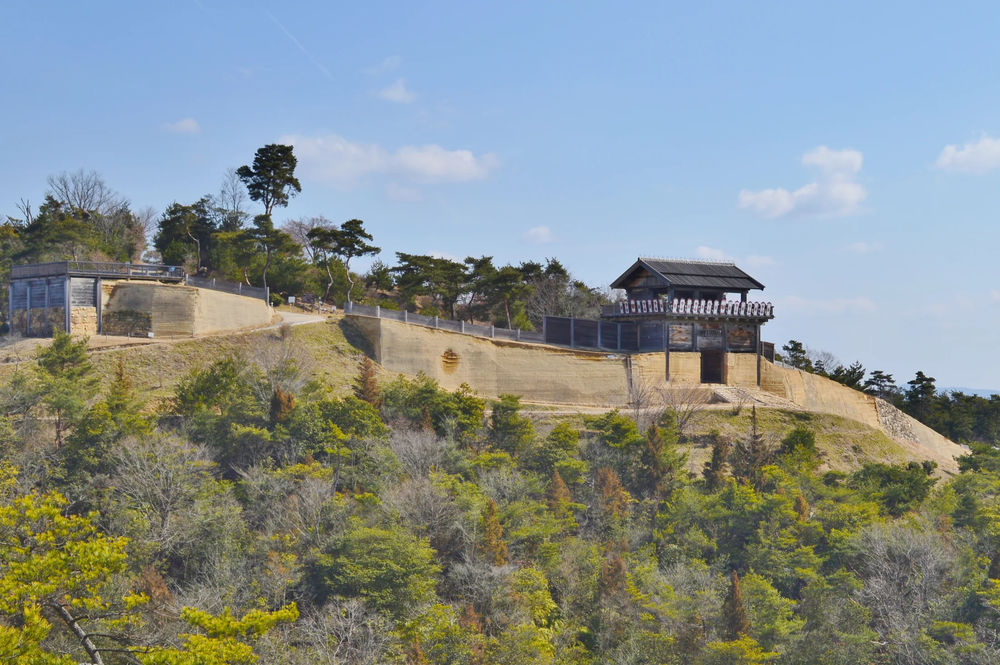
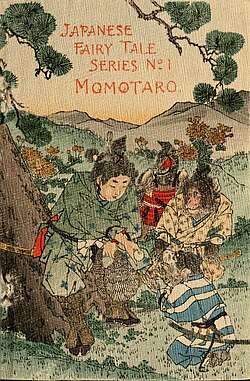
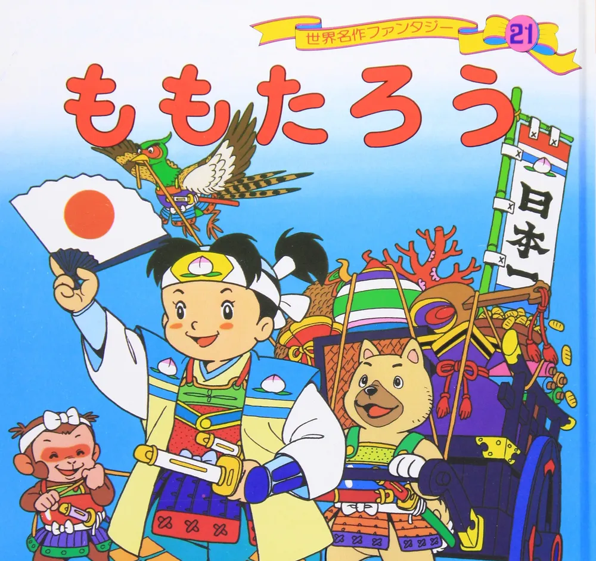
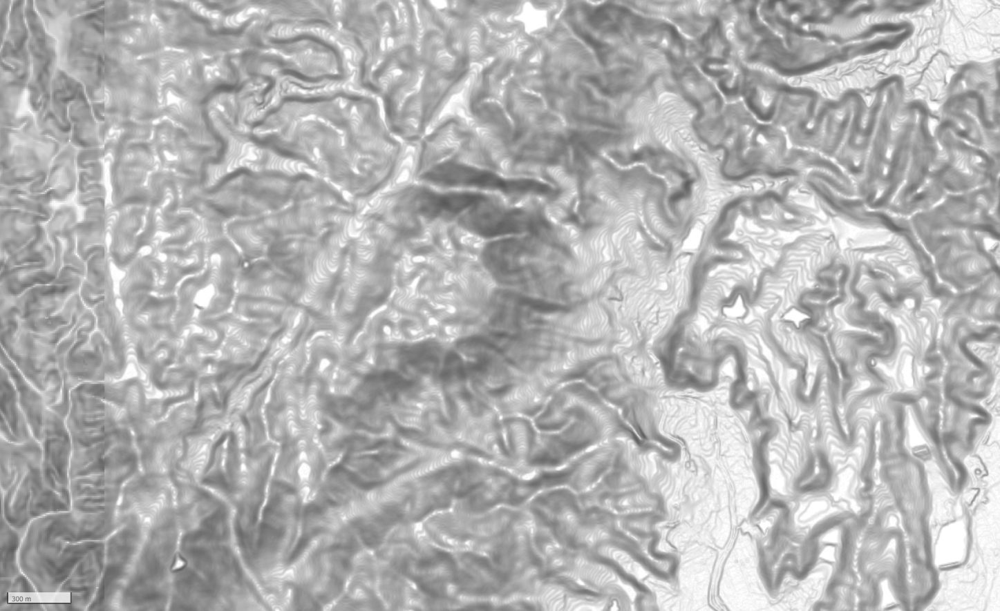

성은 남아 있지만,
이름은 옛 역사서에 없다
소자시는 키노성이 『일본서기』 등 고대의 정사에 이름을 남기지 않았으며, 발굴 성과를 통해 7세기 후반에 만들어졌을 가능성이 높다고 설명합니다. 백제 멸망과 백촌강 전투 뒤의 방어망에 포함되었을 가능성도 제시되지만, 이는 축성 배경에 대한 추정입니다.[1]
발굴에 근거한 설명 · 축성 배경은 추정
오카야마현 소자시 · 고대 산성 · 전승
성은 남았고, 이름은 전설이 되었다
패자의 이름은 어떻게
전설 속 오니가 되었을까?
사진: Saigen Jiro, “Kinojo, enkei-2.jpg” (2017) · CC0 1.0 · 원본·라이선스
이 전시가 붙드는 물음
일본에는 백제식 판축공법으로 지은
고대 산성, 키노성이 있습니다.
오카야마현 소자시의 키노성은 흙을 층층이 다져 올린 성벽으로 산을 두른 고대 산성입니다. 그곳에는 백제 왕자였다는 오니 우라와 모모타로의 원형을 둘러싼 이야기가 전해집니다. 유적의 증거와 전설의 목소리를 나란히 놓고, 정복과 패배를 둘러싼 다른 시선을 살펴봅니다.
01 / 전승과 역사
‘백제 왕자 온라’ 이야기는 키노성의 축성 당시를 직접 기록한 사료가 아니라 후대에 전해진 전승입니다. 그 경계를 먼저 밝힌 뒤 이야기의 여러 층을 따라갑니다.
소자시는 키노성이 『일본서기』 등 고대의 정사에 이름을 남기지 않았으며, 발굴 성과를 통해 7세기 후반에 만들어졌을 가능성이 높다고 설명합니다. 백제 멸망과 백촌강 전투 뒤의 방어망에 포함되었을 가능성도 제시되지만, 이는 축성 배경에 대한 추정입니다.[1]
발굴에 근거한 설명 · 축성 배경은 추정소자시 안내는 후대 문헌 『鬼ノ城縁起』에 나오는 이야기를 소개합니다. 이 이야기에서 온라는 백제 왕자로 등장하고, 기비의 산에 성을 쌓은 뒤 조정에 토벌을 호소당한 존재로 그려집니다. 이는 전승의 인물상이지, 동시대 문헌으로 확인된 실존 인물의 전기가 아닙니다.[2]
지역 전승 · 동시대 사료와 구분다른 방향에서 읽기
온라를 중앙 권력에 맞선 지역 세력의 기억으로 읽는 해석도 있습니다. 일본유산의 공식 해설 역시 기비와 야마토 사이의 세력 다툼이 전승의 배경일 가능성을 소개합니다. 패자의 이야기가 승자의 언어로 바뀌었을 수 있다는 생각은 질문으로 제시하되, 온라가 실제 백제 이주민 왕자였거나 역사 기록에서 의도적으로 지워졌다는 사실이 입증된 것처럼 말하지 않습니다.[3]
가능한 해석 — 확정된 역사적 사실 아님
전승에서 대중 설화로
지역 전승에서 우라는 백제에서 건너온 왕자로, 기비의 산에 키노성을 쌓고 세력을 키운 인물로 그려집니다. 조정은 기비쓰히코에게 그를 토벌하라고 명합니다. 우라는 붉은 머리와 강한 힘을 지닌 오니로 묘사되고, 사람들을 괴롭혔다는 이야기도 덧붙습니다. 이는 『鬼ノ城縁起』 등에 전해진 서사이지 동시대 기록으로 확인된 인물 전기는 아닙니다.[2][3]
기비쓰히코가 화살을 쏘자 우라는 바위 뒤에 숨고, 두 영웅의 화살이 허공에서 맞부딪쳤다고 합니다. 기비쓰히코가 두 발을 한꺼번에 쏘아 우라의 눈을 맞히자 피가 흘러 혈흡천이 되었고, 우라는 잉어로 변해 도망쳤습니다. 기비쓰히코는 가마우지로 변해 그를 쫓아 삼켰고, 마침내 우라의 목을 베었다고 전합니다. 장소와 세부는 전승 자료에 따라 다르게 전해집니다.[3][4]
기비쓰히코가 모모타로, 우라가 오니로 대응되는 연결은 오카야마에서 널리 소개되는 해석입니다. 복숭아에서 태어난 아이, 개·원숭이·꿩과 떠나는 여정, 기비단고와 오니가시마라는 익숙한 줄거리가 지역의 토벌담과 하나의 이야기로 읽히게 되었습니다. 다만 오늘날의 모모타로 이미지와 ‘오카야마가 고향’이라는 지역 정체성은 오랜 시간에 걸쳐 형성되었습니다.[3][5]


02 / 유적과 지형
키노성의 흔적을 살필 때는 전설 속 오니의 성이라는 이름보다 실제 지형과 발굴된 구조부터 읽습니다.
총사시 문화재 안내를 바탕으로 정리했습니다. 축성 시기는 7세기 후반으로 추정되며, 백촌강 패전 뒤 방어를 위해 세운 성 중 하나였다는 배경 설명도 가능성으로 제시됩니다.[1]
성벽 단면을 상상하다
흙을 층층이 넣고 다져 쌓은 판축토루
※ 구조를 설명하는 개념도
발굴에서 확인된 구조
성벽은 판축으로 다진 흙둑이 중심이고, 주요 지점에는 높은 석벽이 놓입니다. 발굴 보고서는 성벽 바깥과 안쪽에 돌을 깐 흔적도 기술하며, 성벽 기초가 빗물에 씻겨 무너지는 것을 막는 토목적 기능이 있었을 가능성을 제안합니다.[6]
보고서의 연구자는 판축을 한 번에 완성하는 단순한 공법이 아니라, 돌을 놓고 흙을 다지고 배수와 바닥을 마련하는 여러 공정이 맞물린 대규모 작업으로 해석합니다. 성벽을 보는 일은 구조를 보는 동시에 이름이 남지 않은 노동을 상상하는 일이기도 합니다.
현장 관찰과 발굴 보고서의 해석을 구분해 읽기
논문을 바탕으로 한 지형 해석
나가에 히로카즈의 분석은 능선과 사면의 경사 변화에 성벽·석벽·평탄지가 놓이고, 골짜기의 물길·저수 공간·수문이 방어와 이동에 함께 쓰였을 가능성을 제시합니다. 지형 겹쳐보기에서는 논문의 이 해석을 참고해 능선과 골짜기의 관계를 직접 살펴봅니다.[7]
03 / 지형을 겹쳐 읽기
마우스·터치로 슬라이더를 좌우로 움직여 두 이미지를 겹쳐 보세요. 아래 조합을 바꾸면 지명·등고선, 지형 음영, 항공 이미지와 표시 구역을 비교할 수 있습니다.
이 비교는 서로 다른 지도 표현을 나란히 보여주는 방식입니다. 과거와 현재의 시간 변화 비교를 뜻하지 않습니다. 지도는 참고용이며 정확한 측량이나 위치 판정에 사용하지 않습니다.

지형 음영색상 지형 표현지도 이미지 5장: 문화재総覧WebGIS · 나라문화재연구소에서 내려받은 공개 GIS 내보내기 자료. 지도 레이어 이름은 이미지에 보이는 표현을 설명합니다. 자료 폴더의 내보내기 안내에 따라 각 지도에 포함된 데이터 제공처·이용 조건도 함께 확인하세요. 참고용이며 측량·정확한 위치 판정에 사용할 수 없습니다.
마지막 질문
기록은 무엇을 남기고 무엇을 말하지 않았을까요? 유적의 증거와 전승의 목소리를 나란히 놓고 볼 때, 우리는 누구의 기억에 귀를 기울이게 될까요?
처음으로 돌아가기 ↑읽은 자료와 이미지 출처
지도는 문화재総覧WebGIS에서 내려받은 공개 자료를 사용했습니다. 데이터 제공처별 표기·이용 조건은 함께 보관한 내보내기 안내를 따릅니다. 우라를 백제계 지역 세력의 지도자로 읽는 것은 전시의 질문을 위한 해석이지 확정 사실이 아닙니다.